路面・ガラス越しでも
［昼夜問わず最高画質］を実現
家庭用や一般的な業務モニター（500〜700cd/㎡）では太刀打ちできない直射日光の下でも、圧倒的な高輝度（2,500〜4,000cd/㎡級）で鮮明な映像を表示。昼間の機会損失を完全にゼロにします。
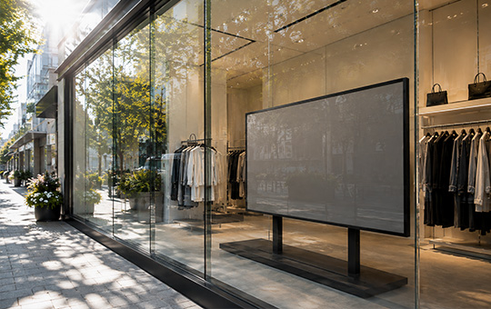
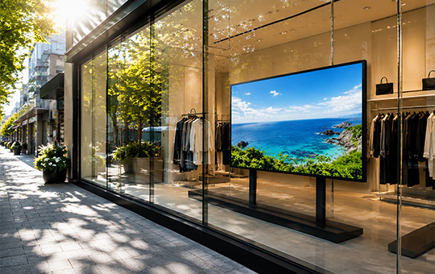
家庭用や一般的な業務モニター（500〜700cd/㎡）では太刀打ちできない直射日光の下でも、圧倒的な高輝度（2,500〜4,000cd/㎡級）で鮮明な映像を表示。昼間の機会損失を完全にゼロにします。
新商品の宣伝やタイムセールの案内も、手元のPCやスマホから一瞬で更新可能。紙のポスター貼り替え作業から解放されます。
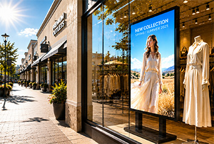
得られる効果：ガラス越しのアイキャッチ効果で、通りすがりのアイドリング時間を伸ばし、店内への引き込み率が劇的に向上。
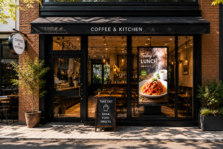
得られる効果：遠くからでも一目でメニューが認知でき、ピークタイムの来店数およびテイクアウト売上の増加に貢献。
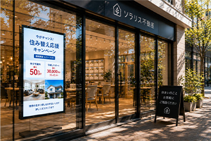
得られる効果：日中の文字潰れや映り込みによるストレスをなくし、足止め効果と問合せ数を最大化。
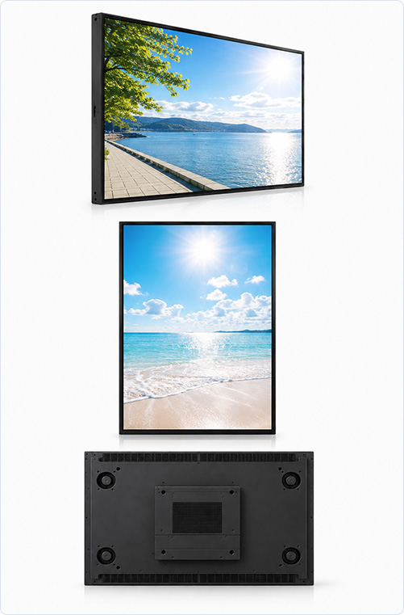
外向けサイネージの最大の敵である「昼間の太陽光」に負けない圧倒的な輝度を誇ります。ガラス越しでもかすれず、鮮烈な発色でブランドや商品の魅力を100%伝えます。
店舗のインテリアやディスプレイの邪魔をしない、極薄ベゼル＆スタイリッシュなデザイン。狭いショーウィンドウ内にもスマートに設置可能です。
ガラス越しで高温になりやすい設置環境を考慮した特殊放熱設計。熱によるブラックアウト（画面が黒く焼き付く現象）を防ぎ、長時間の連続稼働でも安定した表示を維持します。
設置場所の現地調査から、自社専門スタッフによるガラス面近くへの固定施工、配信システムの設定、さらには放映する映像コンテンツの制作まで、すべてワンストップでお任せいただけます。
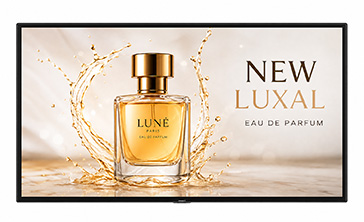
新商品やブランドイメージを動的な映像で放映し、通行人の視線を誘導。
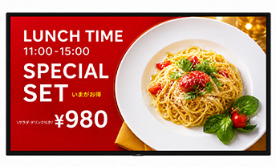
時間帯（ランチ・ディナーなど）に合わせて自動で表示内容を切り替え。
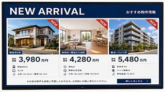
日差しの中でも文字がクッキリ読める高精細表示で、じっくり見せる情報を訴求。
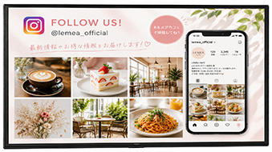
お店のInstagramや動画コンテンツを連動させ、若い層への共感と信頼を獲得。
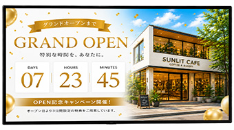
セール開催やオープン記念などのカウントダウンで来店意欲を刺激。
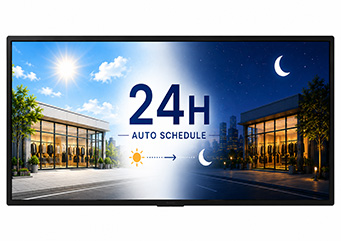
夜間は輝度を自動調整して消費電力を抑えつつ、24時間無人での告知・ブランディングを継続。
ショーウィンドウに設置したサイネージが
「昼間真っ黒で見えない」
「せっかく設置したのに通り過ぎられてしまう」
という店舗の致命的な課題をクリアします。
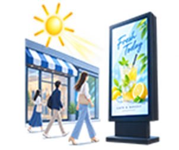
太陽光による反射で画面が見えなくなる問題を劇的に解消。昼間でもくっきり目立つ映像で、街行く人の視界へ確実に飛び込みます。
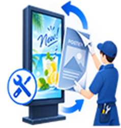
キャンペーンの度に発生していたポスター印刷代や貼り替えの人件費・作業時間を削減。クラウド配信で一瞬で最新情報へ更新。
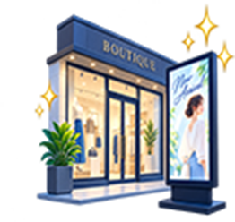
古くなった貼り紙やPOPから洗練された光と映像のサイネージへ変革することで、店舗全体の美観を高め、ブランドの価値を引き上げます。
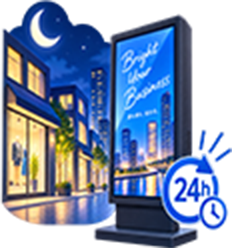
閉店後や夜間も明るい映像で店頭を照らし、防犯効果を高めながら24時間眠らない営業マンとして機能させます。
| 比較項目 | CWHLシリーズ | 一般的な 家庭用／業務モニター | 格安海外製 サイネージ |
|---|---|---|---|
| 画面の明るさ （輝度） | 圧倒的高輝度 （2,500cd〜） （直射日光・ガラス越しも鮮明） | 低輝度（350〜500cd） （昼間の太陽光で真っ黒） | 普通（1,000〜1,500cd） （日中は見えづらい） |
| 耐熱・ブラックアウト対策 | 太陽熱対策済み | 対策なし （熱で画面焼き付き） | 対策不十分 （短寿命・故障多発） |
| 施工・現地調査 | 国内自社スタッフが施工 | ユーザー自身で設置 | 設置サポートなし （売り切り） |
| アフターサポート | 万全の国内保守対応 | メーカー保証のみ | なし （故障時対応不可） |
| 総合評価 | ★★★★★ （店舗外向け推奨） | ★☆☆☆☆ （屋内専用・外向けNG） | ★★☆☆☆ （安いがすぐ見えなくなる） |
「うちの店のガラス面でも太陽光に勝てるだろうか？」
「設置環境や適切なサイズについてアドバイスが欲しい」
など、まずはお気軽に現場調査をご相談ください。
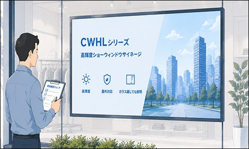
まずはお気軽にご相談ください
無料相談・現場調査の